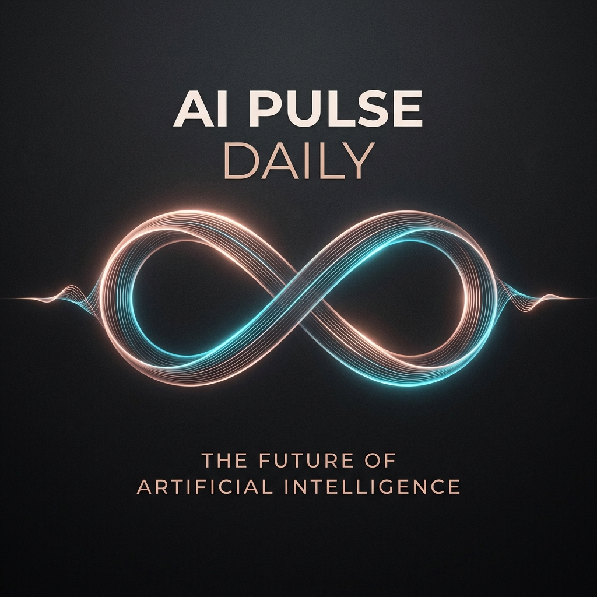

Master AI & Tech English Every Day
Your automated 10-minute conversational podcast covering breakthrough AI research, startups, and software engineering in articulate B2 English.
Daily AI & Tech Podcast
00:00
10:43
📌 Auto-Scroll: ON
💬 Live Flowing Sentences (Click any sentence to listen)
128 Sentences